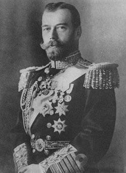

Forums galactiques > Assemblée Galactique : diplomatie officielle > Présentations officielles à l'Assemblée
Pages : 1
| Commandeur Valorys Respect diplomatique : 865  15/05 ETU 21:53 | Score : 7 Détails ___________________________
Transmission holographique Vaisseau Amiral AFC Icare ___________________________ Salutations Je suis Lloyd Valorys, Commandeur de la Fédération Comenorienne. Notre gouvernement a décidé il y a peu d'intensifier nos relations intergalactiques. Nous espérons pouvoir développer les relations diplomatiques entre nos différents peuples. Nous essayerons dans la mesure du possible d'être présent le plus souvent devant l'assemblée. Nous envoyons dès à présent une délégation de diplomates pour nous tenir informer des différents débats au sein de l'assemblée. Sachez que nous somme ouvert à d'éventuels pactes de non agression, d'alliance militaire ou commerciale, et ce avec tout peuple nous contactant. Je vous prie d'accepter les cordiales salutations de la Fédération Coménorienne ____________________ Fin de transmission ____________________ | ||
| tsar nicolasII Respect diplomatique : 5  25/05 ETU 11:36 | Score : 5 Détails après la guerre bolcheviks en russie j'ai engagé un sosie pour se faire passer pour moi.
et j'ai pris une navette qui a été aspiréé par un vortex. et je me suis retrouver sur une planète déserte.que j'ai developper comme ma patrie la sainte mère la russie. j'ai oublié de vous dire j'ai un stock de vodka. | ||
| A Respect diplomatique : 176  25/05 ETU 15:50 | Score : 3 Détails Kamarade,
En tant que délégué du peuple des A, la volonté de mon parti sera de TOUJOURS défendre les exploités de Travailleurs dans cette galaxie. A cette fin, nous mettrons nos forces dans la défense des plus faibles. Plusieurs projets seront mis le plus rapidement en place bientot, pour venir en aide aux plus démunis. Actuellement, par exemple, nous préparons "L' Etoile Rouge", une future caisse d'aide, qui sera ponctionné sur nos ressources propres pour offrir gratuitement aux pauvres Kamarades, l'argent et les ressources nécessaire à leur survie ici. Politiquement, nous serons neutre. Les intrigues politiciennes de pouvoir des impérialistes ne nous intéressant pas. Nous ne convoiterons aucun mandat/poste ou entrée dans une coalition. Nous serons des adversaires uniquement diplomatique et politique face à la toute puissance des lobbys capitalistes du leem. Les négociations d' achat, en cours, d' une planète dans le système 0 fait partie des gestes forts pour permettre aux Travailleurs du Prolétariat d' etre représentés au sein du Capitalisme politique. Nous prenons l' engagement officiel, de n' attaquer personne mais, jurons aussi, de faire cracher toutes les dents à celui qui nous attaquera. Dans la défense de nos travailleurs, nous serons sans pitié. Ces présentations étant faites et nos buts affichés, puissions nous, nous entendre dans l' avenir. Mes respects. Kamarade Travailleur Sopalovitch. Emissaire et commissaire du peuple des A, comme représentant, au sein de l' Assemblée. ps: bonjour au Kamarade tsar nicolasII ... "connaissance" politique d' un passé historique lointain de l' ancien monde terrestre :) | ||
| Lord Oblivion2 Respect diplomatique : 8  25/05 ETU 17:40 | Score : 1 Détails ________________
Dossier 55-e2 ________________ Mon nom est Sylvo Oblivion, voici ma biographie: Né en 4758 (ETU) sur Utopia V, sous le reigne d'un tyran, Sylvo quitte la maison maternelle et paternelle pour monter un réseau résistant. Mais un effroyable soir, deux membres de cette organisation cédèrent sous la torture et le réseau fut démantelé et seul trois personnes survecurent aux descente de la PAI (Police Autoritaire Inflexible), et c'était Sylvo et deux de ses meilleurs alliés, Karlyos ETANA et Avril CRISTOS, qui sont aujourd'hui les deux personnes que l'ont peut voir siéger a ses côtés à l'assemblée. Il remonta son organisation, qui gagna toute la planête. Ils se procurèrent une flotte d'attaque et la guerre civile commenca. Tous les habitants d'Utopia allèrent se réfugier dans des vaisseaux-colonies, tandis que l'état de la planête empirait. un jour, la décision fut prise de lancer l'arme qui avait mis 5 ans à se développer, une bombequi avait la possibilité d'anéantir la planête, ce qui fut fait. Il arriva avec sa colonie sur une nouvelle planête, Tarsis alpha, renomée Omega à ce jour, où il vit encore. | ||
| Alexander Anderson Respect diplomatique : 16  26/05 ETU 13:12 | Score : 1 Détails Je suis Alexander Anderson, le Paladin,porte-paroles de sa Sainteté le Pape et chef de l'Ordre des Chevaliers de la Sainte Foi,les agents envoyés dans la galxie par le Tout-Puissant pour exercer Son chatîment divin.
Que Son nom soit sanctifié Que Sa volonté soit faite sur la Terre comme au Ciel Que périssent ceux qui oseront se rebeller contre Son règne en les anéantissant jusqu'au dernier Amen | ||
| capitaine solo Respect diplomatique : -10  22/06 ETU 18:20 | Score : 0 Détails un homme sort de la penombre,son nom personne ne le connait mais à sa vue tout les regards se tournent vers lui:
"-Commandants,commandantes.Je me nomme solo,j'ai sillonnais toute les galaxies avant d'arriver sur origine.Je suis un commandant amical et honnete.je n'est pas de mauvaise intention." puis il salut l'assemblé et repartie sur son systéme |
Pages : 1
Forums galactiques > Assemblée Galactique : diplomatie officielle > Présentations officielles à l'Assemblée